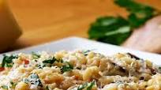

Bacon Porcini Risotto

Description
Fluffy risotto prepared with arborio rice and livened with the incorporation of bacon and resulting juices as well as porcini mushrooms for a strong umami infusion. Made healthy through addition of peas and/or asparagus (selection at the discretion of the preparer).
Ingredients
Fresh Asparagus or Frozen Green Peas
Prepation Steps
Prepare the rice with an appropriate ratio of chicken broth in a sufficiently deep pot.
Saute bacon, mushrooms, and vegetables in a skillet.
Deglaze skillet with white wine
Combine prepared ingredients, add parmesean cheese and salt & pepper to taste. Serve promptly.